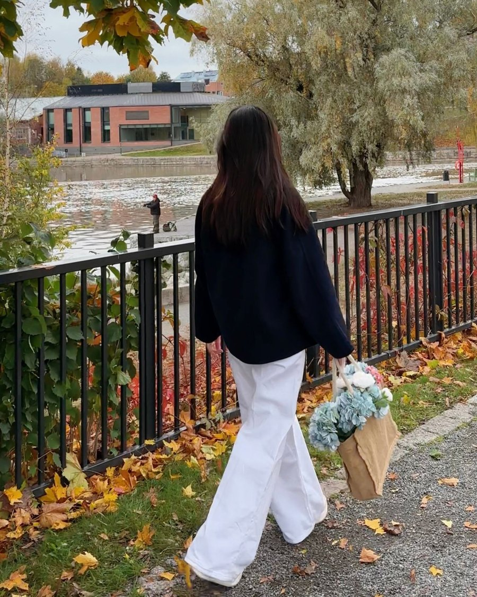

When I was younger, I imagined my thirties as a finish line. By then, I thought, I would have it all figured out: a clear career, a settled home, a life that looked like the ones I saw around me. Now that I’m here, it feels less like a finish line and more like standing in the middle of a road, not completely sure which way to walk.
Nobody really talks about this part. We talk about the confusion of our twenties as if it has an expiry date. But for many of us, the questions don’t disappear at thirty. They just become quieter, heavier, and a little more personal.
Feeling lost
Some days I feel steady. Other days I wonder if I’ve taken the long way around for no reason. I’m studying again, starting over in a new country, and building a life that doesn’t follow a straight line. On paper it’s a brave choice. In real life, it sometimes just feels like being behind.
Feeling lost in your thirties is a strange kind of lost. It isn’t the dramatic, everything-is-possible confusion of being twenty. It’s more like knowing what you don’t want anymore, but not yet knowing clearly what comes next. And at this age, there’s a quiet pressure to already know.
The comparison trap
The hardest part, honestly, is comparison. It’s so easy to scroll through photos of friends my age and see the milestones: promotions, weddings, new homes, babies, trips that look effortless. Each one is lovely on its own. But together, they can make my own life look small, as if everyone else received a map and I somehow missed the day it was handed out.
Then there are the questions — from relatives, acquaintances, sometimes from myself. What are you doing now? When will you settle down? Shouldn’t you be further along by now? They’re usually asked kindly. Still, they land on a place that already feels unsure.
What I’m slowly learning is that I only ever see other people’s highlights, while I live through all of my own ordinary, messy, in-between days. Comparing the two isn’t fair to anyone. Everyone carries something that doesn’t make it into the photos.

My own timeline
Lately, I try to measure my life against who I was last year, not against who someone else is today. A year ago, I didn’t know some of the things I know now. I hadn’t lived through some of the things that made me stronger. That kind of progress doesn’t show up in a milestone post, but it’s real.
I also try to remember that there is no single schedule for a life. Some people find their path at twenty-two, some at forty-five, and some change paths more than once. Starting over at thirty-something isn’t a delay. It’s simply my timeline, the only one I can actually live.
What helps, on the harder days
On the days when the comparison feels loud, I put my phone down for a while. I write down three small things I did well that week, even if they feel tiny. I talk to someone who knows me beyond my achievements. And I remind myself that feeling uncertain is not the same as failing — it usually means I’m in the middle of growing into something I can’t see yet.
If you’re in your thirties and feeling a little lost too, I want you to know you’re not late, and you’re not alone. Maybe we’re all just somewhere in the middle, figuring it out one ordinary day at a time.
— Chi